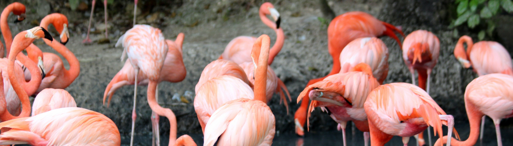

Жители Зоопарка
Розовые фламинго
Фламинго розовый (обыкновенный) (Phoenicopterus ruber roseus) - самый крупный представитель отряда Фламинго (семейство Фламинговые). Длина тела может достигать 145 см и масса 4 кг.
Распространен в Южной Европе, на Ближнем Востоке, в Средней и Южной Азии, на севере, западе и востоке Африки.
Обитатель открытых мелководных побережий озер с соленой или щелочной водой. Питается разнообразными мелкими беспозвоночными животными, преимущественно ракообразными. Пищу добывает, отцеживая её из воды и жидкого ила. Манера кормиться и строение клюва не имеют аналогов в мире пернатых. В момент кормежки фламинго всегда держит клюв подклювьем вверх и надклювьем вниз! Объемный клюв снабжен по краям тонкими роговыми пластинками, отцеживающими пищу, а мускулистый язык действует подобно поршню.
Отличается высокой потребностью в обществе себе подобных. В одиночестве чувствует себя плохо.
Гнездится большими колониями, насчитывающими от нескольких сотен особей до сотен тысяч!
Для гнездования выбирает недоступные топкие отмели соленых водоемов. Образует гнездовую пару. Гнездо в виде усеченного конуса с вогнутым лотком для кладки строится из ила. В кладке 1-2, реже 3 яйца. Насиживание длится 28 суток. Первую неделю жизни птенцы остаются в гнезде. Вначале родители кормят их красной жидкостью, выделяемой особыми железами пищевода. В ее состав входят белки, жиры, каротиноиды и даже ... красные кровяные клетки. Со временем птенцов начинают кормить и полупереваренными рачками и моллюсками, пока им не исполнится 5-6 недель. Когда родители улетают за кормом, птенцы собираются в большие группы, образуя «детские сады». При возращении птенцов кормят только в родном гнезде, но нигде не наблюдалось агрессивного отношения взрослых птиц к чужим птенцам. Поистине дружелюбная птица!
.jpg)
Императорский пингвин
Импера́торский пингви́н (лат. Aptenodytes forsteri, также известен как пингвин Фостера) — самый крупный и тяжёлый из современных видов семейства пингвиновых. Его средний рост составляет около 122 см, а вес колеблется между 22 и 45 кг. Голова и задняя часть тела чёрная, брюшная часть — белая, к верху становящаяся жёлтой. Как и все пингвиновые, императорские пингвины не умеют летать. Вместе с королевским пингвином относится к роду императорских пингвинов (Aptenodytes). Видовое латинское название дано в честь немецкого учёного Иоганна Форстера (1729—1798).
Внешний вид
Самцы императорского пингвина достигают роста 130 см и весят в среднем 35—40 кг, но максимально вес самца может достигать 50 кг. Самки достигают 114 см роста и 32 кг веса. Это самый крупный из современных пингвинов. Мускульная масса императорского пингвина также самая большая из всех видов птиц (в основном за счёт грудных мускулов). Оперение императорского пингвина на спине чёрное, а на груди белое, что делает его в воде менее заметным для врагов. Под шеей и на щеках у них жёлто-оранжевая окраска. Птенцы покрыты белым или серовато-белым пухом.
.jpg)
Саванный слон
Саванный слон (лат. Loxodonta africana) — млекопитающее из рода африканских слонов отряда хоботных. Является самым крупным из ныне живущих наземных животных. Поскольку лесной слон, ранее считавшийся подвидом африканского слона, был выделен в отдельный вид, возникло современное название саванный слон.
Внешний вид
Саванный слон характеризуется массивным тяжёлым телом, большой головой на короткой шее, толстыми конечностями, огромными ушами, верхними резцами, превратившимися в бивни, длинным мускулистым хоботом.
Согласно «Книге рекордов Гиннесса», это самое крупное наземное млекопитающее. Самым крупным экземпляром из когда-либо зарегистрированных в Книге рекордов был самец, застреленный 7 ноября 1974 года в Мукуссо (Ангола); его вес составил 12,2 т[2].
Длина тела достигает 6—7,5 м, высота в плечах (наивысшая точка тела) — 3—3,8 м. Средняя масса тела у самок 3 тонны, самцов — 5 тонн.